アダプター
注意！
このページに掲載したアダプターのうち、SRD-4及びSRD-4PROについてはスタックス社のエレクトレット・コンデンサー型（SR-30、40、50，80，80PRO）ヘッドフォンのユーザー以外に取っては、原則的に無用の長物です。
また、SRD-7/Mk2以外のアダプターについては、現行のスタックス社のヘッドフォンを接続すること自体は可能ですが、その性能を十分に発揮できるものではありません。
�@SR-1時代の初期のアダプター
最初のモデルSR-1用に用意されたアダプター。詳細は不明。オークションなどにもまず登場しない。
SRD-1
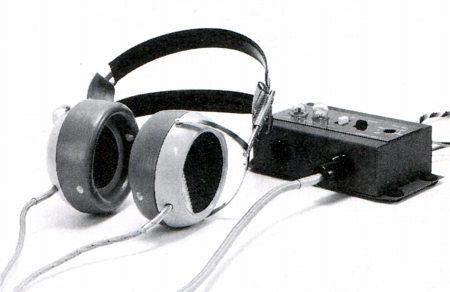
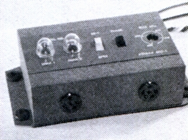
1961年発売、当時2,000円。
アンプ出力トランスの1次側に接続、バイアス電圧はアンプから得るらしく、一般的なアダプターとは違うようだ。SRD-2より音質は上らしい。
SRD-2
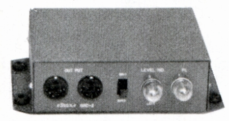
1961年発売、当時2,700円。
スピーカー端子に接続、バイアス電圧は交流電源と、一般的なアダプターだったようだ。
SRD-3
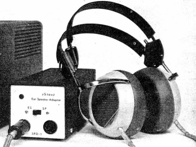
1965年発売、当時4,500円
詳細は不明だが、次のモデルSRD-5と良く似ている。
�ASR-3以降の普及価格帯のアダプター
SR-3登場以降の廉価版のアダプター。ヘッドフォンとセットでしばしばオークションなどに登場する。
SRD-5
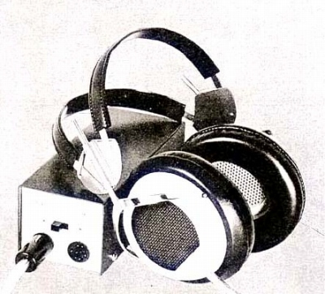
1968年発売、当時4,000円。
SR-3などとセットで、しばしばオークションなどに登場する。
■最大入力 5W
■周波数帯域 20-20,000Hz±1dB
10-30,000Hz±2dB
■歪率 0.1％以下（入力1W/8Ω） 0.15％以下（入力2W/8Ω）
0.3％以下（入力5W/8Ω）
■成極電源 AC100V 50/60Hz 0.5mA
■消費電力 0.5W以下
■重量
940g（コード含む）
■サイズ W67×H67×D170mm
■備考
消費電力が小さい為、電源スイッチがついていない。
メーカーはアンプの連動ACアウトレットとの接続を推奨していた。
取扱説明書
SRD-6
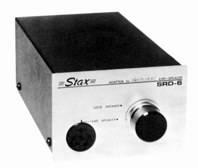
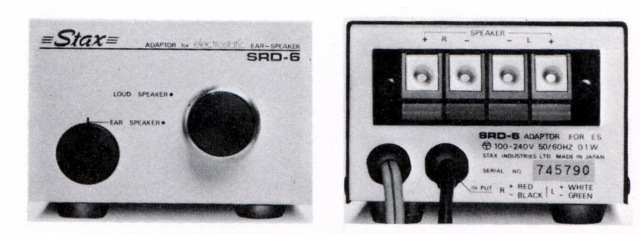
1973年発売、当時6,000円。
上級モデルSRD-7登場後の為、普及型としての性格が明確となり
ヘッドフォン端子はSRD-5までの2系統から1系統へとなった。
■最大入力 連続8W(1kHz)/瞬間30W(1kHz)
■周波数帯域
10-30,000Hz±2dB
■歪率 0.2％以下（50Hz/1W） 0.02％以下（1,000Hz/1W）
0.05％以下（10,000Hz/1W）
■成極電源 AC100-240V 50/60Hz
0.5mA
■消費電力 0.1W
■重量 1.2kg
■サイズ W90×H66×D194mm
■備考
消費電力が小さい為、電源スイッチがついていない。
SRD-6SB
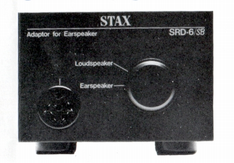
1978年発売、当時7,500円。
バイアス電圧をAC100Vではなく、音楽信号の一部から作るセルフバイアス(*)タイプ。
■最大入力 連続8W(1kHz)/瞬間30W(1kHz)
■周波数帯域
10-30,000Hz±2dB
■歪率 0.2％以下（50Hz/1W）
■成極電源
■消費電力
■重量 1.2kg
■サイズ W90×H66×D194mm
■備考
＊セルフバイアスについて
セルフバイアスの長所は、アダプターのリヤパネルがスッキリとし、設置の際にコンセントの位置に縛られないことである。逆に欠点は、音楽信号の一部からバイアス電圧を作る関係上、音楽信号の強弱によりバイアス電源の安定性が左右されることにある。ただし、コンデンサー・ヘッドフォンのバイアス電圧にはある程度のチャージ効果があるので、音楽信号の強弱がそのままヘッドフォン自体の動作に直結することはない。管理人の経験では、クラシックなどでは多少不安定に感じる場合があるが、ヘッドフォンの音自体は途切れたりすることはなかった。
�BSR-X登場以降の高級アダプター
上位機種SR-Xに合わせ登場した上級のアダプター。従来のものより大型・良質のトランスを搭載、線材なども吟味されていた。
SRD-7
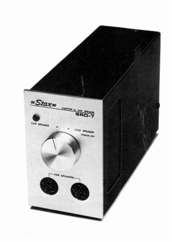
1971年発売、当時8,000円。
なお、このモデルのセルフバイアス・バージョンが存在するが、
輸出専用モデルであり、国内では販売されなかった。（SRD-7SB)
■最大入力 連続8W(1kHz)/瞬間30W(1kHz)
■周波数帯域
10-30,000Hz±1.2dB
■歪率 0.05％以下（50Hz/1W） 0.02％以下（1,000Hz/1W）
0.05％以下（10,000Hz/1W）
■成極電源 AC100-240V 50/60Hz
■消費電力 0.1W
■重量 1.7kg
■サイズ W73×H120×D215mm
■備考
ヘッドフォンとスピーカーの切替スイッチが電源スイッチを兼ねる。
SRD-7SB
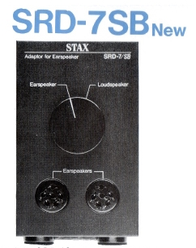
1987年頃？発売、輸出専用モデル。
発売時期は英語版カタログの記載時期。
■最大入力 30W(1kHz)
■周波数帯域
10-30,000Hz
■歪率 0.02％以下
■重量 1.7kg
■サイズ W73×H120×D215mm
■備考
なおSRD-7SBの情報はすべて「蒼乃雑記」の蒼乃さんより提供していただきました。
SRD-7/Mk2
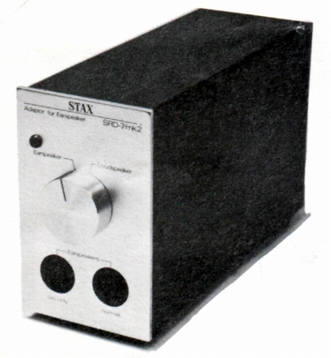 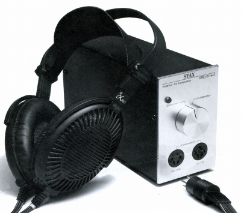
1985年発売、当時17,000円。
アダプターでは唯一、現行の580Vバイアス・コンセントを備えたタイプ。
トランス巻線、入力ケーブル、内部配線にLC-OFC線を使用。
シャーシは磁性材を廃し、アルミ材を使用。
■最大入力 連続8W(1kHz)/瞬間30W(1kHz)
■周波数帯域
10-30,000Hz
■歪率 0.05％以下（50Hz/1W） 0.02％以下（1,000Hz/1W）
0.05％以下（10,000Hz/1W）
■成極電源 AC100V 50/60Hz
■消費電力 0.1W
■重量 1.5kg
■サイズ W73×H120×D215mm
■備考
ヘッドフォンとスピーカーの切替スイッチが電源スイッチを兼ねる。
�Cエレクトレット・コンデンサー型用アダプター
SR-40、50，30，80などエレクトレット・コンデンサー型用アダプター。
SRD-4
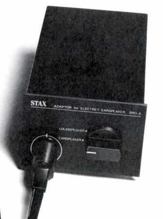
SR-40、50，30，80とセットで販売された。単体での販売は行われていない。
■最大入力 連続5W(1kHz)/瞬間30W(1kHz)
■周波数帯域
10-30,000Hz±2.5dB
■歪率 0.02％以下（1,000Hz/1W）
■重量 860g
■サイズ W90×H66×D194mm
■備考 外寸はSRD-6と同寸。
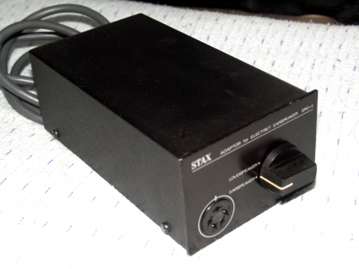
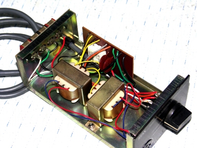
(管理人所有機 SR-40に付属していたもので、おそらく1970年代のもの。）
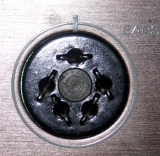
（管理人所有機のコンセント。6本ピンのものを改装して5本ピン用にしているようだ。）
SRD-4PRO
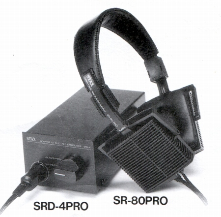
SR-80PROとセットで販売された。単体での販売は行われていない。
なお外観は基本的にSRD-4と差はなく、本体には「PRO」の表記はされていない。
カタログによるとトランス巻線をPCOCCに変更等の改良がされたらしい。
外寸、基本的なスペックはノーマルのSRD-4に準ずるものと思われる。
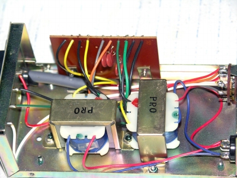
(管理人所有機 SR-80PROに付属していたもので、トランスに「PRO」と記入されている。）
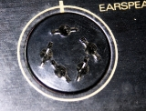
（管理人所有機のコンセント。こちらは他のプロバイアスコンセントと同じものだ。）
（SRD-4とSRD-4PROの比較）
注 あくまでも管理人所有の初期型SRD-4とSRD-4PROの比較です。1980年代のSR-30に付属のSRD-4の詳細は不明です。
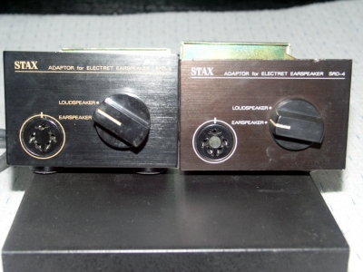
（左がSRD-4PRO。パネルの色が微妙に違う。またロゴ等の文字の色も違う。）
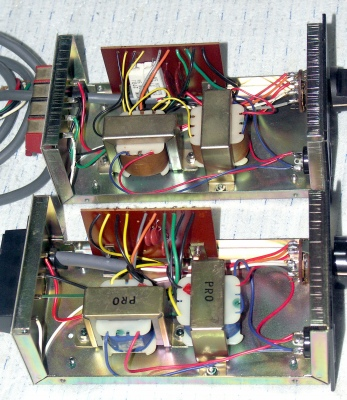
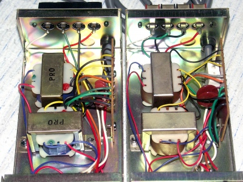
（手前及び左がSRD-4PRO。基本的なレイアウトは同じだが、側面の基盤上のパーツが違う。）
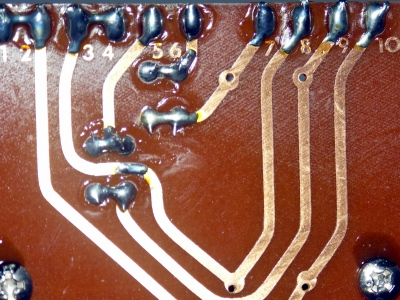
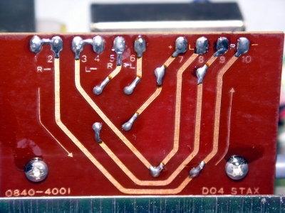
（左がSRD-4PRO。基本的なパターンは同じだが、パーツサイズによる変更があったようだ。PROの方の基盤に旧パーツ用の痕跡がある。）
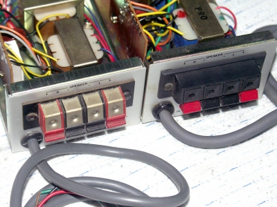
（左がSRD-4。出力端子は初期のSRD-6と同じもの。）
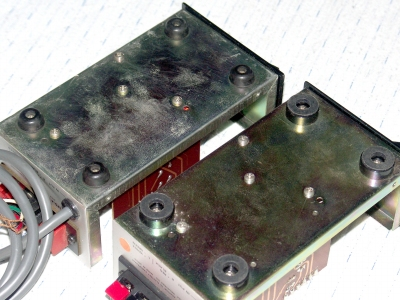
（手前がSRD-4PRO。SRD-4の足は昔風のゴム足だ。）
SR-80付属のSRD-4
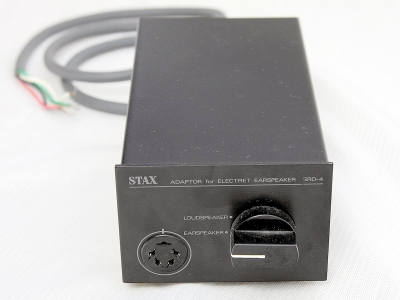
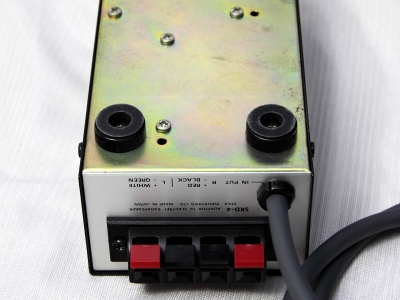
写真は「蒼乃雑記」の蒼乃さん所有機。
外観・接続端子・出力端子・足は管理人所有のSRD-4PROと同じもののようだ。おそらくSR-30のものも同様だろう。
なおSRD-X系統のモデルは、昇圧にトランスを使用しているが、製品としての性質上ドライバーユニットに分類しております。